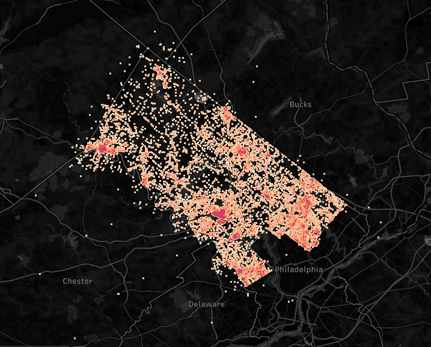
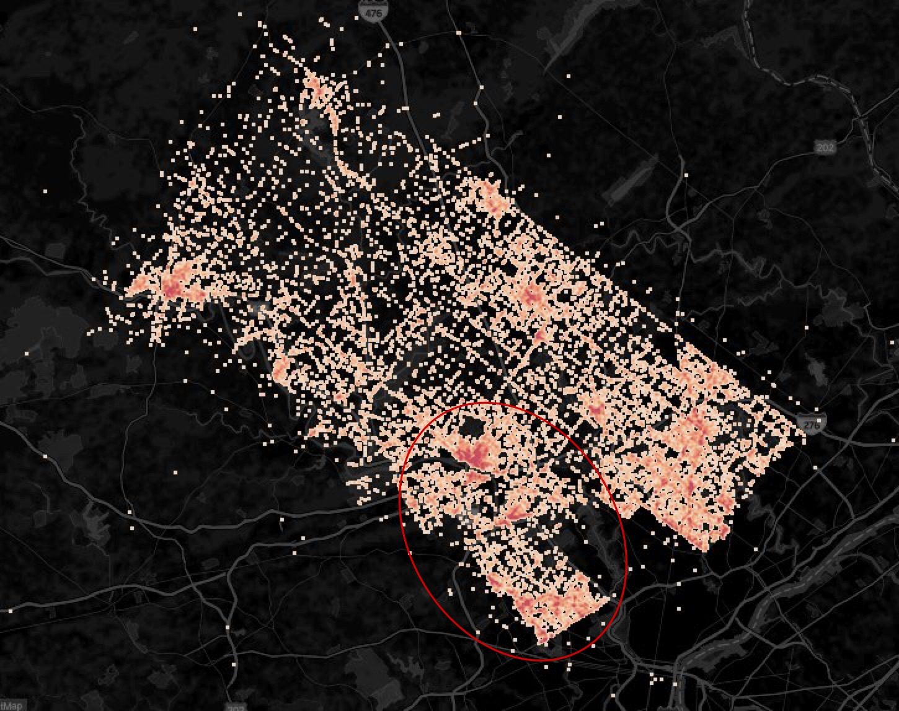

Montgomery County is the third-most populous county in the Commonwealth of Pennsylvania, and the 73rd-most populous in the United States. With a constant growing population, it is important to create an efficient and effective strategy to handle 911 calls countywide.

General Overview of 911 Calls from 2016 - 2019.
How many 911 calls are there?
145,837 Each Year
48,612 Each Month
400 Each Day
Breakdown of 911 Call Categories
A Quick Breakdown
There are 3 main categories of 911 calls: Fire, Traffic, and Emergency Medical Services (EMS). Approximately half of all 911 calls are related to an Emergency Medical Service related incident.
The top incidents for each category were: fire alarms, vehicle accidents, and respiratory emergencies.
What were the top 10 reasons for a 911 call?
Stacked Bar Chart
Vehicle Accidents On Top
Vehicle accidents led the way as the #1 reason for 911 calls, beating out the next 5 incidents combined. However, vehicle accidents and disabled vehicle incidents together beat out the next 8 incidents combined. It is clear that traffic related incidents are a primary reason for 911 calls.
Focusing on the Top 5
Percentages represent proportions of the top 5 only.
Stacked Bar Chart
Readjusting Our Focus
Over the last 4 years, the top 5 incidents have been consistent, always within 1-3% of the previous year. In the previous graph we saw that vehicle accidents and disabled vehicles led the way in being the top incidents. Here, we can see that that has been the case over the last 4 years, suggesting that this has been an ongoing issue.
Although we might have noticed that EMS as a whole accounts for more 911 calls, this is due to there being many more different EMS related calls than traffic incidents. However, we saw that vehicle accidents are the main reason for 911 calls by a large margin, and thus we will focus our efforts on this sole incident moving forward.
911 Calls for Vehicle Accidents by Hour and Day
A Look Back In Time
The two main time periods for car accident calls appear to be 7AM - 9AM and 3PM - 6PM, from Sunday to Thursday.
These are fairly intuitive findings as they match the work commute times of most people.
The 5 Most Dangerous Intersections

Locations of Car Accident Calls. (top 5 intersections are within the red cirlce)
Mean Number of Accidents per Intersection is 7.75
Location
Incidents
Schuylkill Expy & Weadley Rd Overpass
939
Schuylkill Expy & Conshohocken State Underpass
825
Schuylkill Expy & Waverly Rd Underpass
559
Schuylkill Expy & Croton Rd Underpass
516
Bethlehem Pike & North Wales RD
473
The Dangers of Intersections
As the mean number of accidents per intersection is 7.75, the 5 most dangerous intersections have a much greater number of incidents than the mean.
These are the intersections that the County of Montgomery must focus on, and assess if there are any design flaws that are facilitating accidents. Moreover, the Montgomery County should consider setting Police routes near these intersections at the times of highest accidents (shown in prior visualization).